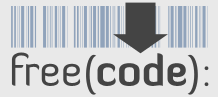

| Site |
Description |
Where to find relax |
 |
Gna! is a central point for the development, distribution and maintenance of Libre Software (Free Software) projects. |
The relax project page is https://gna.org/projects/relax. The relax developer Gna! pages are (in alphabetical order): Edward d'Auvergne, Michael Bieri, Chris MacRaild, Sébastien Morin, Andrew Perry, Han Sun, Gary Thompson. |
 |
The Gmane mailing list archive. |
The archived relax mailing lists include relax-announce (thread, blog, NNTP, RSS), relax-users (thread, blog, NNTP, RSS), relax-devel (thread, blog, NNTP, RSS), and relax-commits (thread, blog, NNTP, RSS). |
 |
An easy-to-use archiving service for electronic mailing lists. |
The archived relax mailing lists include relax-announce, relax-users, relax-devel, and relax-commits. |
|  |
Freecode, previously known as freshmeat, is the Web's largest index of Unix and cross-platform software (mainly open source). |
The relax project page is http://freecode.com/projects/nmr-relax. The relax developers pages are: Edward d'Auvergne. |
|
The open source version control informant. CIA tracks open source projects in real-time. |
The relax real-time open source activity stats page is http://cia.vc/stats/project/relax. This website also has pages for each of the relax developers (in alphabetical order): Edward d'Auvergne, Michael Bieri, Chris MacRaild, Sébastien Morin, Andrew Perry, Han Sun, Gary Thompson. |
 |
LinuxLinks.com, the Linux portal, is a website listing many Linux software projects. |
On the Software:Scientific:Biology:Proteins page. |
 |
The DMOZ Open Directory Project. |
On the Top : Science : Chemistry : Nuclear Magnetic Resonance : Software page. |
 |
Softpedia is the encyclopedia of free software downloads. |
The relax page on Softpedia is http://linux.softpedia.com/get/Science/relax-22351.shtml. The relax developers pages are: Edward d'Auvergne. |
 |
Pro-Linux ist eine der größten deutschsprachigen Seiten zum Thema Linux. |
The relax page is http://www.pro-linux.de/cgi-bin/DBApp/check.cgi?ShowApp..17723.100. |